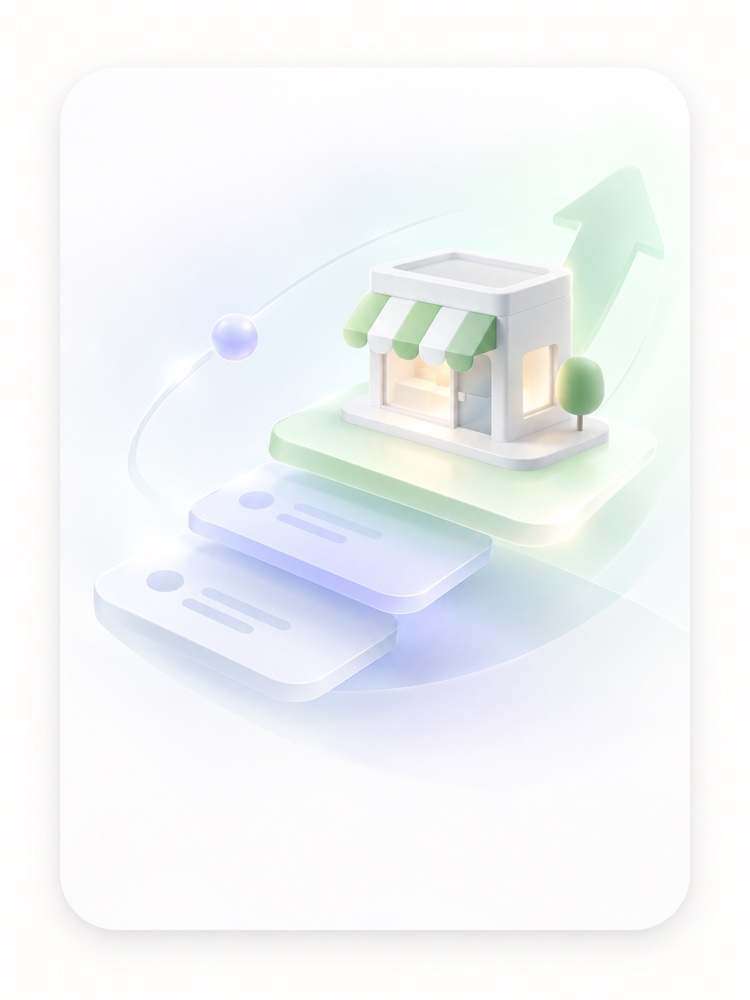

FOR BUSINESS
가게 블로그,
직접 운영해드립니다.
온라인에 우리 가게를 설명하는 정보가 없다면,
손님도 AI도 우리 가게를 찾고 추천하기 어렵습니다.

PROBLEM
이런 고민, 있으신가요?
- 콘텐츠는 계속 만드는데 성과가 없다
- 블로그는 하는데 기억에 남지 않는다
- 광고를 끄면 고객이 줄어든다
- 대표 혼자 마케팅을 계속 해야 한다
핵심 서비스 — 가게 블로그 운영
우리 가게 정보를
꾸준히 쌓아드립니다.
메뉴부터 주차, 공간, 이용방법, 고객 질문까지
우리 가게의 실제 정보를 꾸준히 기록합니다.
손님이 검색하고 비교할 때, AI가 우리 가게를 설명할 때, 참고할 수 있는 정보가 있어야 합니다.
파인디어랩은 메뉴, 공간, 이용방법, 지역 정보, 고객이 자주 묻는 질문과 실제 경험을 꾸준히 콘텐츠로 쌓아드립니다.
기본 정보
메뉴, 가격, 영업시간, 주차, 예약
공간과 분위기
좌석, 분위기, 계절별 이용 정보
손님 질문과 경험
자주 묻는 질문, 실제 방문 상황, 추천 상황
가게 이야기
사장님의 전문성, 지역 맥락, 우리 가게만의 이야기
이런 검색을 콘텐츠로 쌓습니다
블로그 구독
필요한 만큼부터 시작합니다.
가게 상황에 맞는 구독 단계를 선택하세요. 월 9만원부터 시작합니다.
월 9만원부터
월 4회 포스팅
가게 정보를 꾸준히 기록하기 시작합니다.
온라인에 우리 가게를 알릴 정보가 아직 부족할 때. 기본 정보부터 차곡차곡 쌓습니다.
- 메뉴·가격·영업시간 콘텐츠
- 네이버 블로그 운영
- 월 1회 콘텐츠 방향 점검
월 8회 포스팅
검색과 AI가 참고할 수 있는 정보를 더 다양하게 쌓습니다.
꾸준한 포스팅으로 쌓이는 정보량을 늘립니다. 다양한 상황과 맥락의 콘텐츠로 확장합니다.
- BASIC 전체 포함
- 상황별 콘텐츠(아이 동반, 주차, 분위기 등)
- 자주 묻는 질문 콘텐츠
- 월 2회 콘텐츠 방향 점검
월 8회 포스팅 + 크리에이터 방문
크리에이터의 실제 경험까지 더합니다.
지역 크리에이터가 직접 방문하고 기록한 콘텐츠와 비공개 경험노트까지 함께 받습니다.
- STANDARD 전체 포함
- 지역 크리에이터 방문
- 비공개 경험노트
- 월간 리포트
정확한 운영 방식과 비용은 상담 후 가게에 맞게 안내드립니다.
지역 크리에이터 연결
지역 크리에이터와는
이렇게 연결됩니다.
파인디어랩이 지역 사업자와 크리에이터의 경험을 연결하는 방식
지역 사업자
손님에게 더 잘 알려지고 싶음
실제 고객 의견이 필요함
마케팅을 쉽게 운영하고 싶음
크리에이터 방문
공간·서비스·메뉴 경험
손님의 동선 그대로 체험
실제 고객 관점 관찰
공개 콘텐츠
블로그·SNS·사진
크리에이터의 언어로 기록
실제 방문 기반
FINDIER LAB
사업자의 고민 정리
손님 경험을 콘텐츠로 연결
리포트로 정리해 전달
더 잘 보이는 가게
리포트 제공
비공개 경험노트
개선 제안까지 반영
결과
꾸준히 쓸 수 있는 콘텐츠
실제 방문 경험을 바탕으로 한 콘텐츠
손님이 실제로 느낀 것
손님 눈으로 본 솔직한 이야기
가게가 더 좋아지는 아이디어
강점은 더 명확히, 아쉬운 점은 구체적으로
더 많은 사람에게 알려지는 가게
꾸준히 이어가는 성장
크리에이터가 직접 경험한 내용은, 가게 블로그에 쌓이는 새로운 정보가 됩니다.